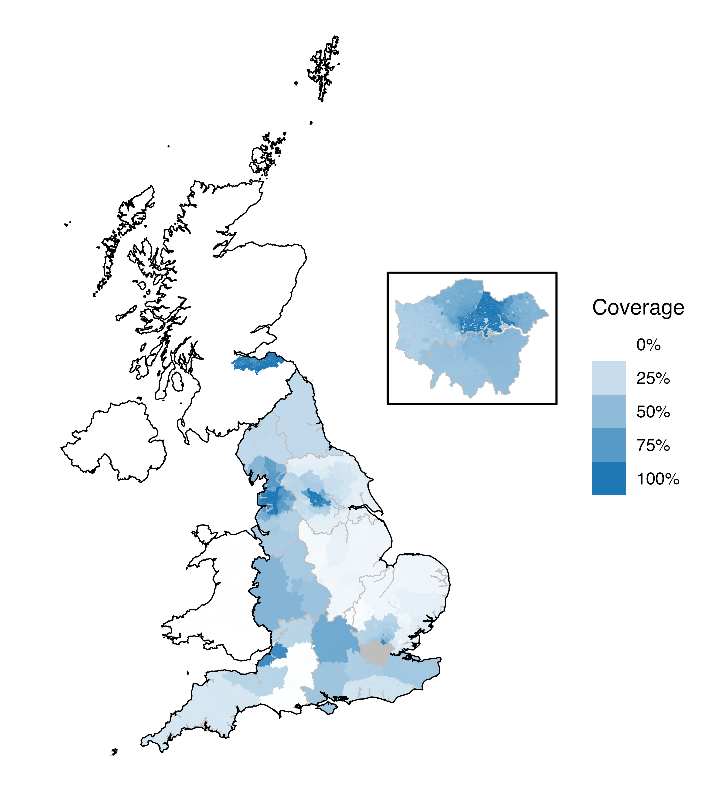

HERON-UK


The HEalth data Research UK OMOP Network (HERON-UK) contains routinely-collected health care data from across the United Kingdom. Our network of 7 data partners contains more than 20 billion clinical records from over 50 million patients. Transparency and reproducibility is a core feature of the network, with all study code made freely available on GitHub, while data privacy is preserved with patient records analysed in situ with only aggregated results shared by data partners to ensure privacy of patient data. The network has been established through funding from HDR UK.
Data capture in HERON-UK
Geographic coverage
